التعرف على الوجوه… على جهازك، بالعربية، وبلا إنترنت
برنامج لنظام ويندوز يتعرف على الأشخاص في الصور والفيديو وكاميرات المراقبة، وينبّهك فور ظهور من تبحث عنه، ويحفظ سجلاً كاملاً بكل ظهور.
صورفيديوكاميرات مباشرةتنبيهات فوريةتسجيلتقارير
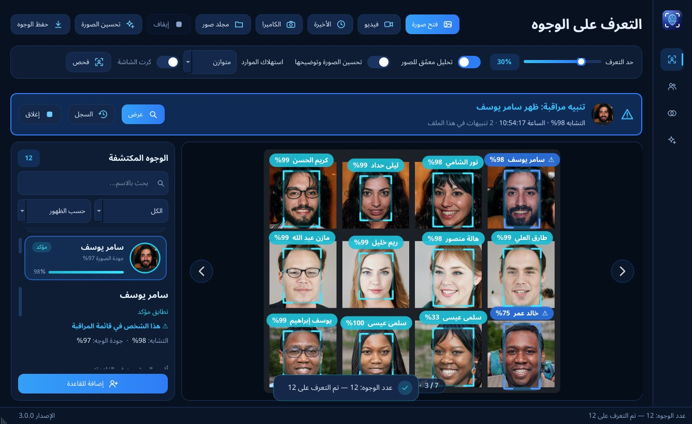
100%محلي: لا تخرج أي صورة من الجهاز
97.9%نجاح التعرف في 28 ظرفاً صعباً
16كاميرا معاً في شاشة واحدة
<1msللبحث في قاعدة 5,000 شخص
تعريف بالبرنامج · أكتوبر 2026
1
ما هو ملامح؟
فكرة البرنامج في دقيقة
ملامح يعرف الوجوه كما يعرفها الإنسان. تعطيه صور الأشخاص الذين تريد أن يعرفهم، فيتعرف عليهم بعد ذلك أينما ظهروا: في صورة، أو مقطع فيديو، أو أمام كاميرا مراقبة تعمل الآن.
1
عرّفه بالأشخاص
أضف الشخص بياناته و3 إلى 5 صور لوجهه، أو استورد مجلداً كاملاً من الصور دفعة واحدة.
2
افتح أو شغّل
صورة، أو فيديو، أو كاميرا. البرنامج يكشف كل وجه ويضع عليه اسم صاحبه ونسبة التأكد.
3
تابع وانتبه
تنبيه فوري عند ظهور شخص مراقَب، وسجل لكل ظهور بالصورة والوقت والكاميرا.
لماذا ملامح مختلف؟
خصوصية كاملة
كل التحليل على جهازك. لا سحابة، ولا اشتراك، ولا إنترنت.
عربي من الأساس
واجهة من اليمين لليسار، ورسائل وتقارير بالعربية الواضحة.
يعمل مع ما عندك
كاميرا اللابتوب، أو كاميرات المراقبة، أو جهاز التسجيل الموجود.
لمن هذا البرنامج؟
🏢المنشآت والشركات
معرفة من دخل ومتى، وتنبيه عند ظهور شخص غير مرغوب فيه، وتقرير يومي بالحضور.
🛡️الأمن والحراسة
مراقبة عدة كاميرات من شاشة واحدة، مع قائمة مراقبة وتنبيهات بمستويات مختلفة.
🔎البحث في التسجيلات
بدل مشاهدة ساعات من الفيديو: «أين ظهر هذا الشخص؟» يجيب عنها البرنامج في دقائق.
🗂️أرشيف الصور
إيجاد كل صور شخص معيّن بين آلاف الصور في المجلدات، ونسخها إلى مكان واحد.
مثال: صاحب محل يضيف صور الأشخاص الممنوعين من الدخول. حين يقف أحدهم أمام كاميرا المدخل، يظهر تنبيه على الشاشة مع صوت، ويُحفظ مقطع الفيديو جاهزاً للتسليم.
كيف يتعرف ملامح على الوجه؟
كل صورة أو لقطة فيديو تمر بخمس مراحل، كلها على جهازك وفي أجزاء من الثانية:
📷المصدرصورة، فيديو، أو كاميرا مباشرة
←
🔍كشف الوجوهيجد كل وجه حتى الصغير والبعيد والمائل
←
📐تعديل وتحسينيعدّل زاوية الوجه ويوضّح المظلم والمشوش
←
🧬بصمة الوجهيحوّل الملامح إلى بصمة رقمية لا تُعاد صورةً
←
🗃️المقارنةبآلاف البصمات في القاعدة في أقل من جزء من الثانية
←
النتيجة
مؤكدمحتملغير مسجل
🔒 لا شيء من هذا يحتاج إنترنت: الصور والبصمات والسجلات تبقى على جهازك فقط
ملامح — التعرف على الوجوه—☐✕
123456
1افتح صورة أو فيديو أو كاميرا، أو اسحب الملف إلى النافذة2حد التعرف: ارفعه للتشدد واخفضه للصور الرديئة3شريط تنبيه المراقبة: ظهر شخص من قائمة المراقبة4اسم كل شخص ونسبة التشابه فوق وجهه مباشرة5قائمة الوجوه المكتشفة مع تفاصيل الوجه المختار6وجه جديد؟ أضفه إلى القاعدة بنقرة
شاشة التعرف: صورة جماعية فيها 12 شخصاً؛ تعرف البرنامج على كل المسجلين، ونبّه فوراً إلى «سامر يوسف» لأنه في قائمة المراقبة (الإطار الأزرق وعلامة ⚠).
2
ماذا يستطيع أن يفعل؟
المزايا الرئيسية، مع صور من البرنامج
👤التعرف على الوجوه
يكشف كل الوجوه في الصورة، حتى الصغيرة والبعيدة.
ثلاث نتائج واضحة: مؤكد، محتمل، غير مسجل.
يعمل مع الكمامة والنظارة والزاوية المائلة والإضاءة الضعيفة.
تصحيح أي نتيجة بنقرة «هذا هو».
📹الكاميرات
كاميرا USB، كاميرات المراقبة القديمة والحديثة، وأجهزة التسجيل DVR وNVR.
زر «اختبار» يوضح بالعربية سبب أي مشكلة في الاتصال.
يعيد الاتصال وحده إذا انقطعت الكاميرا.
طرق توصيل الكاميرات
🎥
كاميرا USB أو كاميرا اللابتوبتعمل مباشرة
كابل USB
📡
كاميرات IPHikvision، Dahua، Reolink…
شبكة / Wi-Fi
📼
جهاز تسجيل DVR / NVRمع الكاميرات القديمة والحديثة
كابل شبكة
الراوترالشبكة المحلية
بث RTSP
جهاز ملامحيحلل ويسجل وينبّه حتى 16 كاميرا
لا يلزم تغيير الكاميرات الموجودة: البرنامج يقرأ البث نفسه الذي يقرؤه جهاز التسجيل، ويقترح عنوان كل كاميرا حسب ماركتها، ويبحث عنها في الشبكة تلقائياً.
الكاميرات—☐✕
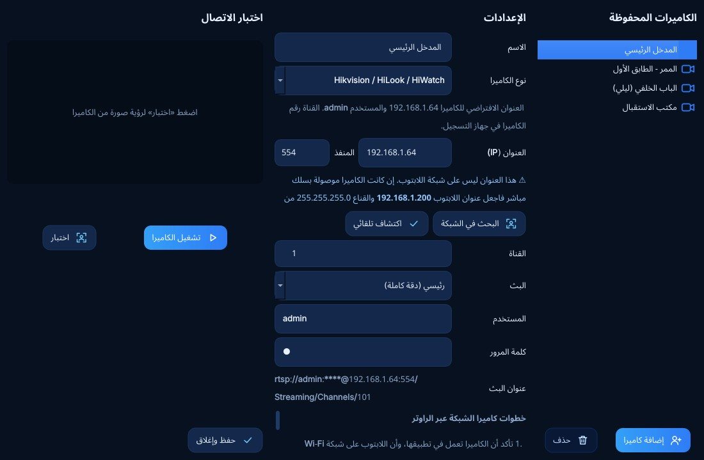
إضافة كاميرا: اختر الماركة فيكتب البرنامج عنوان البث وحده، مع «البحث في الشبكة» و«اكتشاف تلقائي» وزر «اختبار» يعرض صورة من الكاميرا قبل حفظها.
🖥️عدة كاميرات معاً
حتى 16 كاميرا في شبكة واحدة على الشاشة.
تحليل وتسجيل وتنبيهات لكل كاميرا.
مناطق داخل الصورة تُراقَب أو تُتجاهل (باب، ممر، تلفاز).
جدول زمني لكل كاميرا: ساعات التنبيه وساعات التسجيل.
🔔المراقبة والتنبيهات
قائمة مراقبة: شريط تنبيه وامض وصوت فور ظهور الشخص.
مستوى لكل شخص: عادي، إنذار عالٍ، صامت، أو إشعار ويندوز.
تنبيه عن زائر مجهول تكرر ظهوره أو ظهر ليلاً.
تأكيد الظهور في لقطتين قبل التنبيه، فتقل الإنذارات الكاذبة.
ملامح — الكاميرات—☐✕
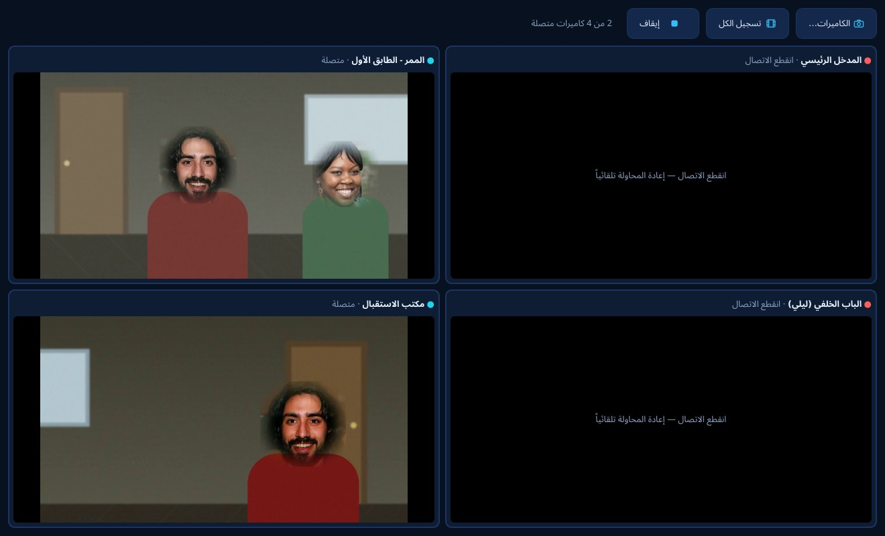
شاشة الكاميرات المتعددة: كل كاميرا في خانتها مع اسمها وحالة اتصالها، وتحليل وتسجيل مستقل لكل واحدة، و«تسجيل الكل» بزر واحد. هنا انقطع اتصال كاميرتين، فبقيت الأخريان تعملان والبرنامج يعيد المحاولة معهما تلقائياً.
مناطق التحليل والجدول—☐✕
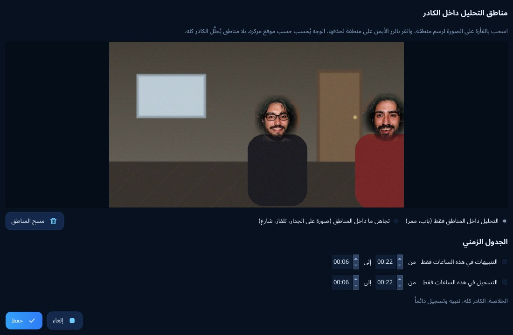
مناطق التحليل: ارسم على صورة الكاميرا المنطقة التي تُراقَب أو تُتجاهل، وحدد ساعات التنبيه والتسجيل.
سجل التنبيهات—☐✕
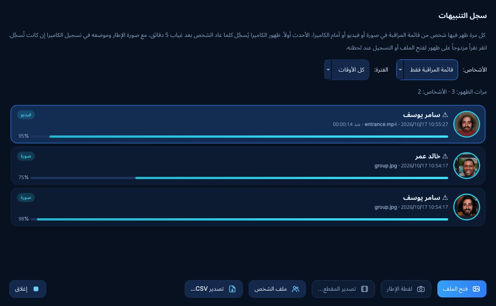
سجل التنبيهات: كل ظهور لشخص مراقَب بصورته ونسبة التشابه والوقت والمصدر، مع حفظ اللقطة أو المقطع.
⏺️التسجيل
تسجيل الكاميرات في ملفات فيديو عادية.
خيار التسجيل عند الحركة فقط لتوفير المساحة.
حذف التسجيلات القديمة تلقائياً قبل امتلاء القرص.
حفظ 30 ثانية حول لحظة الظهور في مقطع جاهز للتسليم.
🕒السجل والتاريخ
كل ظهور يُحفظ بالصورة والوقت والكاميرا.
متصفح تسجيلات بخط زمني لـ 24 ساعة لكل كاميرا.
«أين ظهر؟» يجمع كل ظهور لشخص خلال أسبوع.
الزوار المجهولون يُجمعون، ويمكن تسميتهم لاحقاً.
📇ملف لكل شخص
البيانات الكاملة: الاسم، الهوية، الهاتف، العنوان، التصنيفات، الملاحظات.
مؤشر «قوة الملف» ونصيحة بما ينقصه من صور.
كشف الصور التي أضيفت لشخص آخر بالخطأ.
تنبيه إن كان الشخص مسجلاً مرتين، مع زر للدمج.
🎞️تحليل الفيديو
خط زمني يظهر عليه متى ظهر كل شخص.
تحليل جزء محدد من الفيديو أو منطقة من الصورة.
تخطي اللقطات الساكنة فيصبح تحليل الساعات الطويلة أسرع بكثير.
تصدير كل ظهور شخص في مقطع واحد.
ملامح — قاعدة البيانات—☐✕
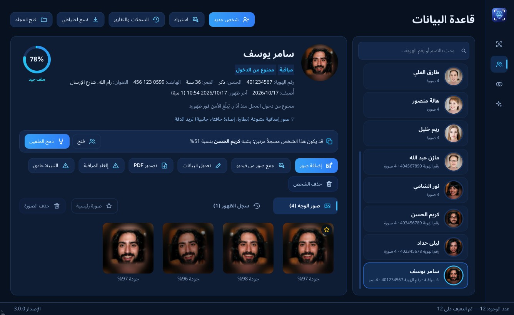
ملف الشخص: البيانات والتصنيفات (مراقبة، ممنوع من الدخول)، ومؤشر قوة الملف 78%، وتنبيه بأن الشخص قد يكون مسجلاً مرتين مع زر «دمج الملفين»، وصوره مع جودة كل صورة.
ملامح — تحليل فيديو—☐✕
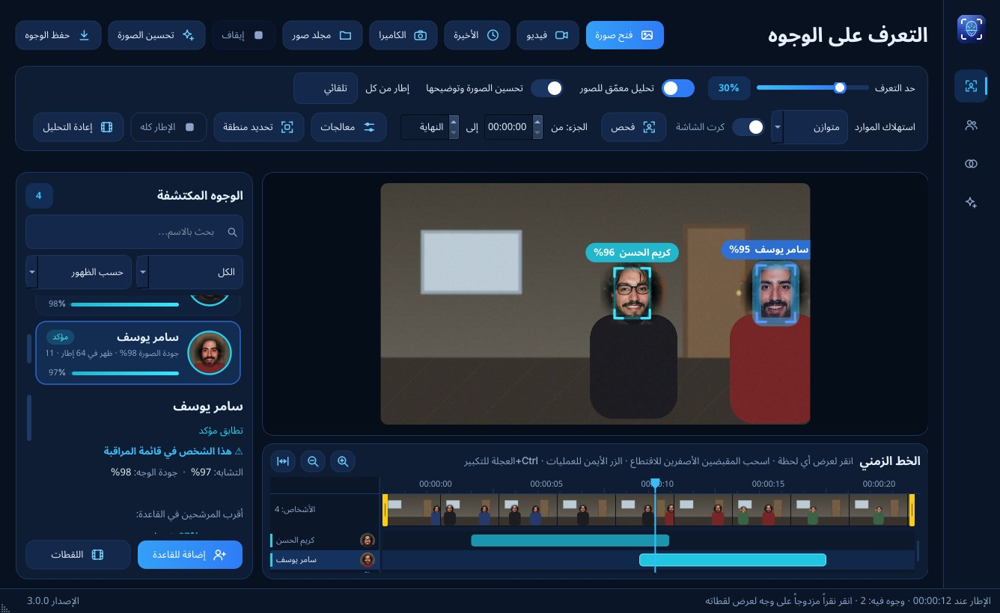
تحليل الفيديو: مقطع من كاميرا مدخل تعرّف فيه البرنامج على «كريم الحسن» و«سامر يوسف» (المراقَب). تحت الفيديو خط زمني بمسار لكل شخص يبيّن متى ظهر بالضبط؛ انقر على المسار للانتقال إلى اللحظة، أو صدّر كل ظهوره في مقطع واحد.
✨تحسين الصور
توضيح الصور المظلمة والصغيرة والمشوشة.
تكبير الدقة حتى أربعة أضعاف.
معالجات للكاميرات الليلية والمائلة والقديمة.
قص تلقائي حول الوجه بمقاس الصورة الشخصية.
⚖️المطابقة والبحث
مقارنة صورتين: هل هما الشخص نفسه؟ ونسبة التشابه.
البحث بصورة: أقرب عشرة أشخاص في القاعدة.
البحث عن شخص بين آلاف الصور في مجلد.
جمع أوضح صور الشخص من فيديو لتقوية ملفه.
تحسين الصور—☐✕
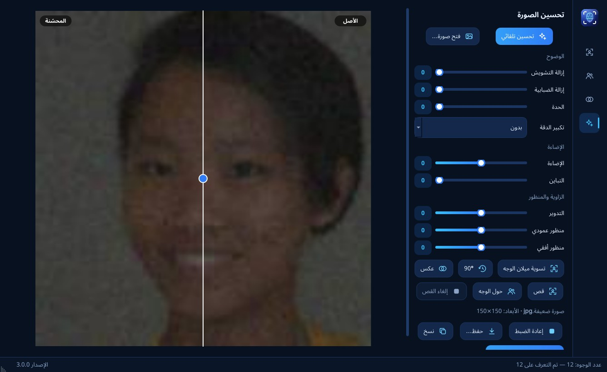
تحسين الصور: صورة صغيرة مظلمة مشوشة قبل وبعد التحسين، مع شريط مقارنة يُسحب بين النسختين.
المطابقة—☐✕
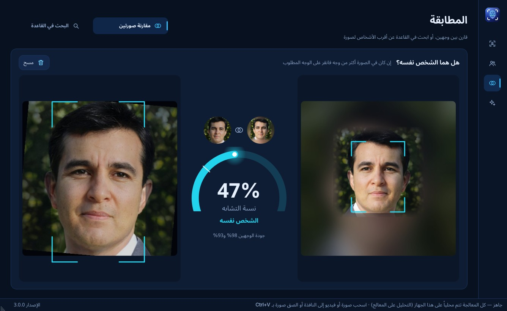
مقارنة صورتين: صورتان مختلفتان للشخص نفسه (إحداهما معكوسة ومائلة)، ونسبة التشابه وحكم واضح: «الشخص نفسه».
📄التقارير
تقرير يومي PDF: لكل كاميرا الظهور وساعات التسجيل والأحداث.
ملف الشخص PDF بصوره وبياناته وسجل ظهوره.
تقرير تحليل الفيديو للطباعة، وجداول Excel.
تصدير سجل التنبيهات.
🔒الأمان والاعتمادية
نسخ احتياطي تلقائي يومي أو أسبوعي، واستعادة آمنة.
يعمل في الخلفية من أيقونة بجانب الساعة، ويبدأ مع ويندوز.
كلمات مرور الكاميرات محفوظة مشفرة.
صيانة ذاتية للتشغيل الطويل لأشهر دون امتلاء القرص.
معالجات الفيديو—☐✕
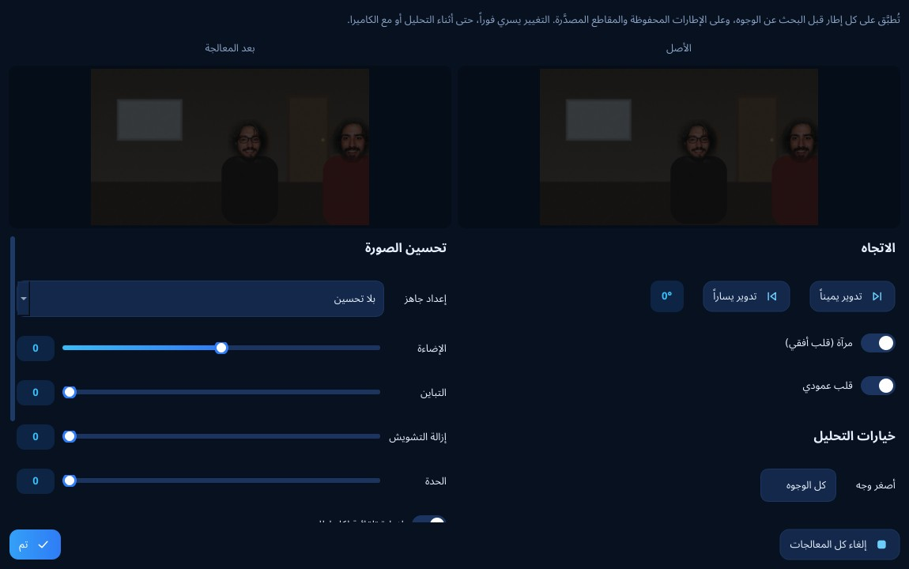
معالجات الكاميرا: إضاءة وتباين وإزالة تشويش وتدوير لكاميرا ليلية أو مقلوبة، مع معاينة قبل وبعد.
الإعدادات—☐✕
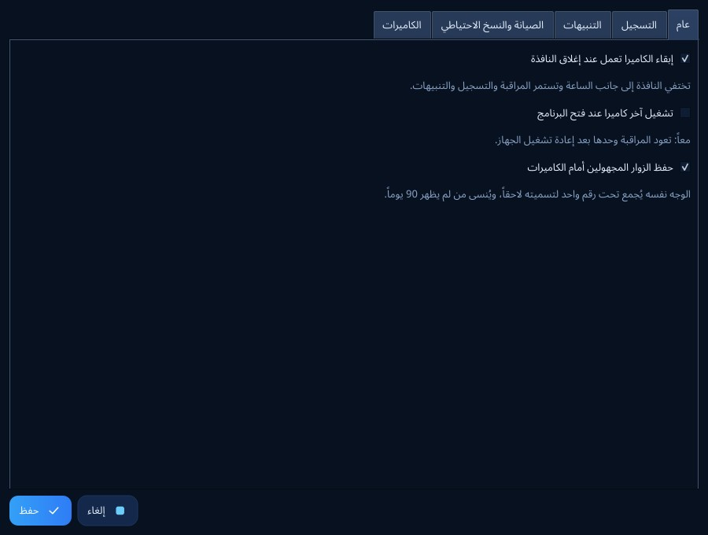
الإعدادات: العمل في الخلفية، والتشغيل مع ويندوز، والنسخ الاحتياطي والصيانة، كلها من نافذة واحدة.
سهل للجميع
اسحب وأفلت
اسحب أي صورة أو فيديو إلى النافذة، أو الصق صورة مباشرة.
شروحات داخل البرنامج
كل خطوة في توصيل الكاميرات مشروحة بلغة بسيطة.
لا يثقل الجهاز
اختر: خفيف أو متوازن أو أقصى سرعة، ويستفيد من كرت الشاشة إن وُجد.
3
النتائج بالأرقام
اختبارات مقيسة على البرنامج نفسه
التعرف في أسوأ الظروف
10 وجوه معروفة اختُبرت تحت 28 ظرفاً سيئاً (280 محاولة): ظلام، تشويش، كمامة، نظارة شمسية، زاوية علوية، وجه بعيد صغير، صورة مقلوبة، كاميرا مراقبة ليلية…
قبل التحسينات
94.6%
الآن
97.9%
صفر أخطاء في الهوية: لم يُنسب أي وجه إلى شخص آخر في أي ظرف، ولم يُتعرف على الشخص غير المسجل. الحالات القليلة التي فاتت كانت وجوهاً فقدت ملامحها تماماً من شدة التشويش أو الإضاءة.
الظرف
النتيجة
ظلام، تباين منخفض، صور رمادية، ألوان منحرفة
10 من 10
كمامة، نظارة شمسية، رأس مائل، صورة مدارة
10 من 10
كاميرا مرتفعة وزاوية علوية حادة
10 من 10
وجه بعيد صغير جداً في لقطة عالية الدقة
10 من 10
ضبابية الحركة
10 من 10
كاميرا مراقبة رديئة، وصورة مقلوبة
9 من 10
كاميرا مراقبة ليلية، وإضاءة زائدة جداً
8 من 10
ثبات التعرف في الفيديو
نسبة اللقطات التي نُسب فيها وجه لشخص آخر، في فيديو فيه 6 أشخاص بنسخ رديئة (دقة منخفضة جداً، ظلام، إضاءة متغيرة):
قبل التحسينات
~7%
الآن
0–0.6%
■ قبل · ■ الآن · الخلط انخفض أكثر من 10 أضعاف
سرعة الفيديو
×8
أسرع من النسخة الأولى في تحليل فيديو عالي الدقة
ذاكرة ثابتة
~480MB
طوال تحليل فيديو 10 دقائق دون أن تزيد
قاعدة سريعة
0.6ms
للبحث عن وجه بين 1,000 شخص بصورهم
4
ماذا تحتاج لتشغيله؟
المتطلبات والبدء
البند
المطلوب
نظام التشغيل
ويندوز 10 أو 11 (64 بت)
الجهاز
أي لابتوب أو جهاز مكتبي حديث. كرت الشاشة اختياري ويسرّع العمل كثيراً
من «قاعدة البيانات»: شخص جديد، ثم 3 إلى 5 صور لوجهه. ضع عليه تصنيف «مراقبة» إن أردت التنبيه عند ظهوره. مؤشر قوة الملف يخبرك إن كانت الصور كافية.
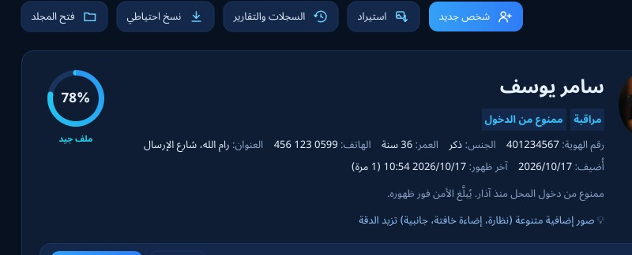
2
أضف الكاميرا
من «الكاميرا ← الكاميرات»: اختر الماركة واكتب عنوانها وكلمة المرور، ثم «اختبار». إن لم تعرف العنوان فاضغط «البحث في الشبكة».
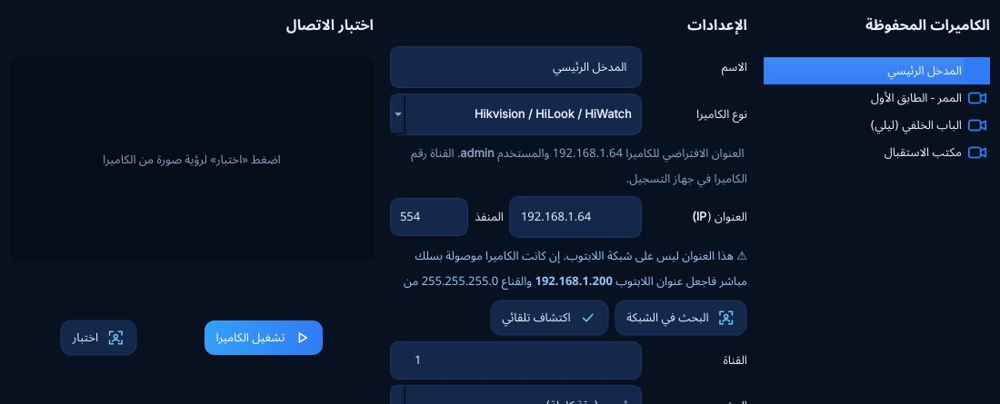
3
حدد ما يُراقَب ومتى
ارسم منطقة الباب أو الممر، وتجاهل التلفاز والنوافذ، واختر ساعات التنبيه والتسجيل لكل كاميرا.
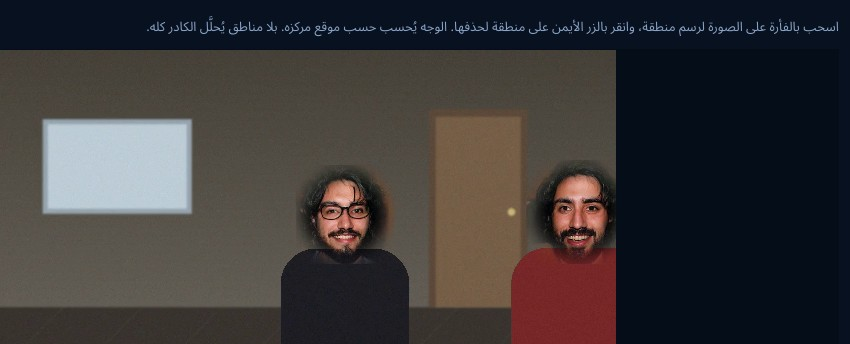
4
شغّل واترك البرنامج يعمل
عند ظهور شخص من قائمة المراقبة يومض شريط التنبيه مع صوت، ويُحفظ الظهور في السجل مع مقطع جاهز للتسليم. ويمكن أن يبقى البرنامج بجانب الساعة ويبدأ مع ويندوز.
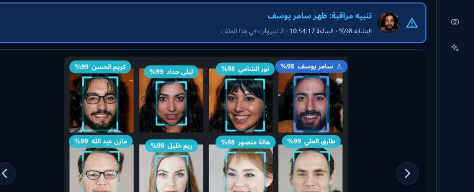
نصائح لأفضل نتيجة
📸صور التسجيل
3 إلى 5 صور واضحة لكل شخص، بزوايا وإضاءة مختلفة.
📐مكان الكاميرا
على مستوى قريب من الوجه، ومواجهة لمسار الناس، ولا تكون الإضاءة القوية خلف الشخص.
📏المسافة
كاميرا عادية عند باب تعطي أفضل نتيجة حتى 4–6 أمتار تقريباً.
🎚️درجة التشدد
ارفعها لتقليل الأخطاء في القواعد الكبيرة، واخفضها للصور الرديئة جداً.
ملامح
يعرف الوجوه… ويحفظ خصوصيتك
الصور في هذا الدليل لقطات حقيقية من البرنامج (الإصدار 3.0.0). وجوه الأشخاص فيها ليست لأشخاص حقيقيين، بل مولّدة بالذكاء الاصطناعي (نماذج StyleGAN من NVIDIA)، والأسماء والبيانات المرافقة لها تجريبية.